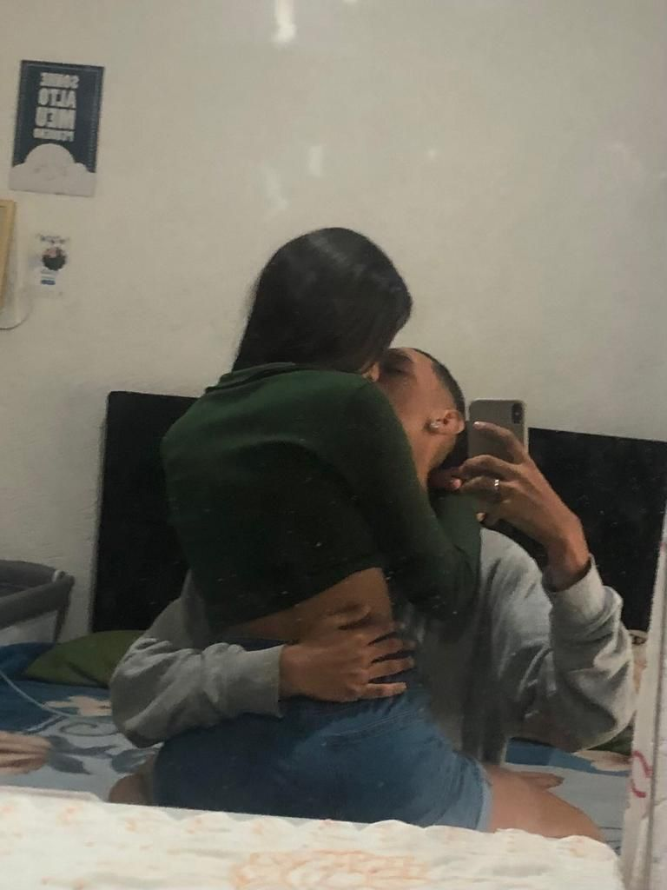

Meu Querido Diário
Oi, sei que não muda nada escrever aqui mas eu não paro de pensar em nós, ray vc está comigo a todo segundo do meu dia até quando estou dormindo eu te levo na alma no coração e nos sonhos, eu te amo muito adoraria recomeçar com você eu só queria mas uma chance, terminar com você foi realmente um baque que fez eu acordar, vi um vídeo que fala que as vezes duas pessoas precisam se separar para entender como é ruim viver sem a outra, e o que doeu foi que pareceu que só eu senti isso, hoje eu vi algo que me magoou e me fez pensar várias coisas e eu não posso cobrar isso de você e, eu acredito que você me ama mas me surpreende a forma que você não demonstra você faz parecer muito facil me esquecer e eu não quero acreditar nisso mas acho que realmente é, eu vacilei com você e a culpa é toda minha e essa culpa não vai ir embora nunca eu estraguei nossas chances e eu sei disso sei que nada vai ser como antes, mas vou lutar para que seja melhor, eu queria muito conversar com você e participar da sua vida pelo menos como estava sendo no começo do término, eu não sei em que momento eu comecei a colocar pontos finais nos textos que escrevia para você mas esse foi meu maior erro eu sinto muito mesmo por ter te machucado sei que você não confia mais em mim e tals mas se estiver disposta a se arrisacar eu dou a minha palavra que vai ser diferente, e se em algum momento acontecer algo que te machuque pode ir sem olhar pra trás e me excluir da sua vida, tem várias coisas que você não sabe então vou contar um pouco, você não sabe que eu prometi que você seria a última quando percebi que o fato deu ter ficado com outras realmente te magoava, você não sabe que quando eu percebi a falta que você tinha de um pai te deixava mal eu tentei de todas as formas ser o homem da sua vida e te fazer esquecer disso, acho que você não sabe dessa mas a nossa aliança demorou pq eu pedia 5 ou 10 reais pro meu pai todo dia pra juntar e comprar ela kkkkkkk acho que você lembra que ele falava que gastava muito no ricardo mas era por isso, eu fiquei tão feliz quando você me mandou aquela aliança no intsa e falou "e se...", você não sabe mas quando estávamos chateados um com o outro e você tinha uma crise de ansiedade e eu ia até você era porque eu odiava te ver sofrendo mesmo que eu ficasse chateado depois de novo era porque eu não conseguia esconder mas eu juro que isso nunca foi manipulação eu só não sabia lidar com meus sentimentos, você não sabe mas eu não queria que você postasse foto por medo de te perder e não porquê eu era abusivo mas na minha cabeça alguém melhor que eu iria aparecer e agora que terminamos eu tenho certeza disso..., você não sabe mas toda vez que eu gritava com você é porquê estava mal e não sabia lidar com isso e acabava descontando em você, você não sabe mas deitar no seu peito e sentir o cheiro da sua respiração era meu ponto de paz, você não sabe mas pra mim você sempre foi a melhor mulher do mundo guerreira trabalhadora esforçada inteligente nunca duvide da sua capacidade eu estou torcendo pelo seu sucesso, você não sabe mas eu choro por você do nada a cada 5 minutos mas eu que causei isso então tudo bem, você pode achar que o que eu sinto por você irá passar um dia mas não vai eu lembro que uma vez discutimos sobre o amor e eu falei que o meu amor poderia se tornar ódio e você descordou e disse "se um dia se tornar ódio é porquê nunca foi amor" e agora eu sei como você estava certa e eu errado, você não sabe mas eu comecei a querer ser alguém na vida para poder te proporcioanar uma vida boa e eu sei que me perdi nessa jornada e acabei que te deixando de lado, você não sabe mas eu tenho muito orgulho de você porquê tu é foda pra caralho, você não sabe mas eu oro sempre pra que você volte pra mim, você não sabe mas sem você em minha vida eu estou perdido, você não sabe e essa você não sabe mesmo mas todas as vezes que te machuquei físicamente e é muito
======= >>>>>>> f2bed7962d0786f598d2655a9ae9cc2d285785abPara Minha Lua 🌑
Amooooooor, estou fazendo esse site para demonstrar o imenso amor que sinto por ti, espero que goste com amor: Gab
 19.21.28_2e88b1e1.jpg)
Agradecimentos
Primeiramente eu queria te agradecer por me salvar de mim mesmo todo santo dia, Você me cura e me completa todos os dias. Obrigado por me compreender e me perdoar, obrigado por ter me levado para a igreja mesmo eu estando meio distante agora vou ser sempre grato a você, muito obrigado por ter me proporcionado os melhores dias da minha vida, cada momento ao seu lado foi e ainda é especial. pra mim, obrigado por tentar mudar por mim sei que é difícil também estou tentando mudar por você, obrigado por me entender e me ajudar em tudo que eu passo gostaria de conseguir fazer o mesmo, obrigado minha princesa por simplesmente existir.
Oque Eu Sinto Por Você
Bom, nem eu sei o que exatamente sinto por você porque não é simplesmente só amor, é uma coisa tão pura e boa que chega a ser inacreditável e indescritível. Amo você mais que tudo no universo e quando falo isso não é da boca pra fora, o que sinto por você é extraordinário, infinito e intenso. Sempre que te vejo é como se fosse a primeira vez, meu coração bate mais forte, perco as palavras, e tudo ao meu redor para e só fica você, os meus melhores momentos são com você, estar ao seu lado me deixa mais seguro, confiante, e confortável, você é na minha vida uma brisa leve e feliz em meio a um caos imenso, o que sinto por você é um amor que vai além desse mundo, além da compreensão humana, é com certeza um amor inabalável.
Tudo Que Amo Em Você
Bem, aqui vou citar algumas coisas que amo em você. Sim, eu amo fazer isso. Obviamente, como eu sempre digo, amo cada parte do seu corpo, cada detalhe e curva sua é perfeita para mim. Amo o tom da sua pele, amo sua risada alta, amo o seu jeito fofo, amo a forma como você é sentimental, amo quando você me abraça; só assim me sinto seguro. Amo deitar no seu peito e fazer outras coisas nele também (mas este site é para ser fofo, então não vou falar disso). Amo seus olhos; toda vez que os encontro, é como se me achasse em você. Amo a sua cintura, acho ela tão perfeita. Enfim, saindo um pouco da parte física, amo como você cuida do seu irmão e defende os seus familiares, amo a sua fidelidade e lealdade, amo como você me aconselha quando discorda comigo, amo o seu carinho e abraço, mesmo não recebendo o tanto que eu gostaria. Amo passar o dia todo de bobeira com você, amo como somos amigos, rir com você é mágico.
Mural de Fotos
Para minha Sunshine 💜
Te amo princesa aproveite a Música e vê se não se esquece de mim
 16.36.17_d74bf9c9.jpg)
Palavra do dia 🙏
Colossenses 3.15 | KJA
15 Seja a paz de Cristo o juiz em vossos corações, tendo em vista que fostes convocados para viver em paz, como membros de um só Corpo. E sede agradecidos.
Já mordeu a língua? Dói, não é? Assim somos nós: partes diferentes de um só corpo que é Cristo e, quando uma parte fere a outra, o corpo todo sente a dor. Somos criados para viver em paz e harmonia. É difícil às vezes, mas deixe que a paz de Cristo dirija sua vida, seu coração e busque viver em paz com todos.
Música do dia
Murais
Clique para ir para o Mural de Fotos
Clique para ir para o Mural de Músicas